République Fighter by Populous
Crédits des images
Les visages du jeu sont des adaptations en dessin de photographies publiées sous licence libre (Wikimedia Commons et Parlement européen). Chaque photo est créditée ci-dessous. Pour les photos sous licence CC BY-SA, le dessin qui en est tiré est publié sous la même licence ; il peut être réutilisé selon ses conditions (attribution à l'auteur de la photo d'origine et partage dans les mêmes conditions).
Ces adaptations n'impliquent aucune approbation de l'auteur de la photo ni de la personne représentée. Le jeu est un jeu d'arcade indépendant, ni affilié ni approuvé par les personnalités ou les partis représentés. Contact : mboilot.invest@gmail.com.
| Personnalité | Photo (auteur, licence) | Dessin | |
|---|---|---|---|
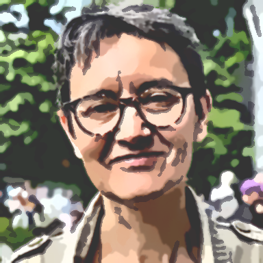 | Nathalie Arthaud | Kokluts CC BY-SA 4.0 Photo d'origine | Ce dessin est publié sous la même licence que la photo d'origine (CC BY-SA 4.0). |
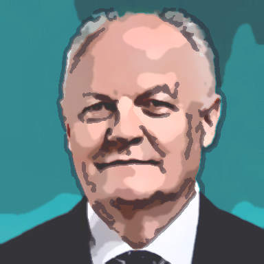 | François Asselineau | Union Populaire Républicaine CC BY-SA 4.0 Photo d'origine | Ce dessin est publié sous la même licence que la photo d'origine (CC BY-SA 4.0). |
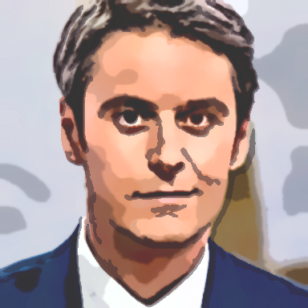 | Gabriel Attal | Ismail Aissoub CC BY 4.0 Photo d'origine | Adaptation en dessin, crédit conservé. |
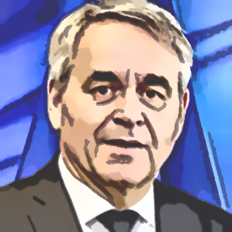 | Xavier Bertrand | Claudio Centonze / European Union, 2025 / EC - Audiovisual Service CC BY 4.0 Photo d'origine | Adaptation en dessin, crédit conservé. |
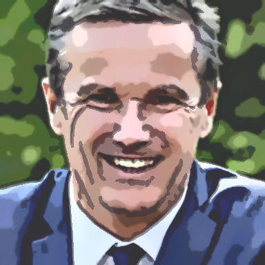 | Nicolas Dupont-Aignan | Debout la France CC BY-SA 4.0 Photo d'origine | Ce dessin est publié sous la même licence que la photo d'origine (CC BY-SA 4.0). |
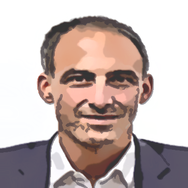 | Raphaël Glucksmann | © Union européenne 2024 – Source : Parlement européen Réutilisation autorisée avec mention de la source (Parlement européen) Photo d'origine | Licence d'origine : Réutilisation autorisée avec mention de la source (Parlement européen). |
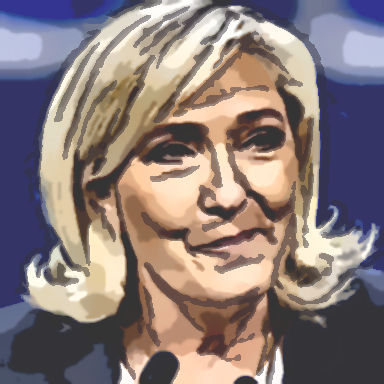 | Marine Le Pen | Vox España CC0 Photo d'origine | Licence d'origine : CC0. |
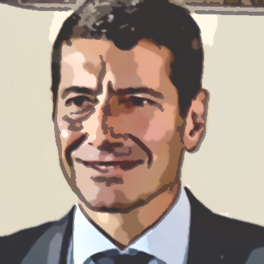 | David Lisnard | Frantogian CC BY-SA 3.0 Photo d'origine | Ce dessin est publié sous la même licence que la photo d'origine (CC BY-SA 3.0). |
| Jean-Luc Mélenchon | jlm2017.fr CC BY 4.0 Photo d'origine | Adaptation en dessin, crédit conservé. | |
| Édouard Philippe | Wasasaq8 CC0 Photo d'origine | Licence d'origine : CC0. | |
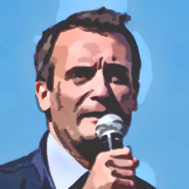 | Florian Philippot | Thomas Bresson CC BY 4.0 Photo d'origine | Adaptation en dessin, crédit conservé. |
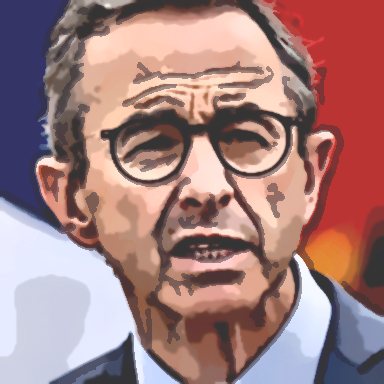 | Bruno Retailleau | Anthonymontardyfr CC BY 4.0 Photo d'origine | Adaptation en dessin, crédit conservé. |
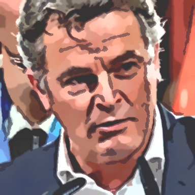 | Fabien Roussel | Zouhair NAKARA CC BY-SA 4.0 Photo d'origine | Ce dessin est publié sous la même licence que la photo d'origine (CC BY-SA 4.0). |
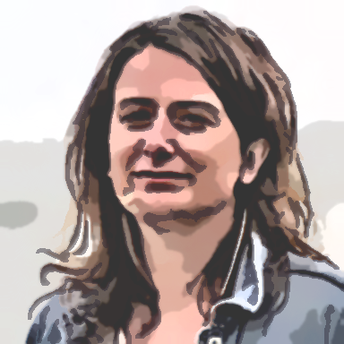 | Marine Tondelier | Greenbox CC BY-SA 4.0 Photo d'origine | Ce dessin est publié sous la même licence que la photo d'origine (CC BY-SA 4.0). |
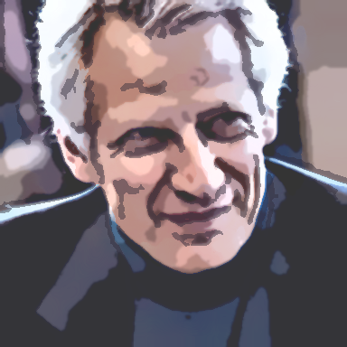 | Dominique de Villepin | Georges Seguin (Okki) CC BY-SA 3.0 Photo d'origine | Ce dessin est publié sous la même licence que la photo d'origine (CC BY-SA 3.0). |
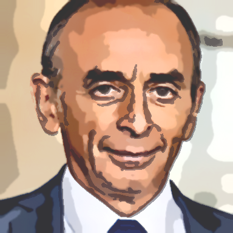 | Éric Zemmour | Anh De France CC0 Photo d'origine | Licence d'origine : CC0. |
_19-05-2024.jpg){kind=link}

.jpg){kind=link}
.jpg){kind=link}
.jpg){kind=link}

.jpg){kind=link}

.jpg){kind=link}


.jpg){kind=link}